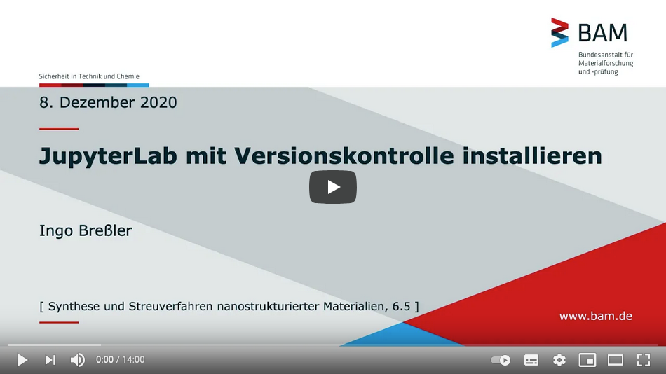
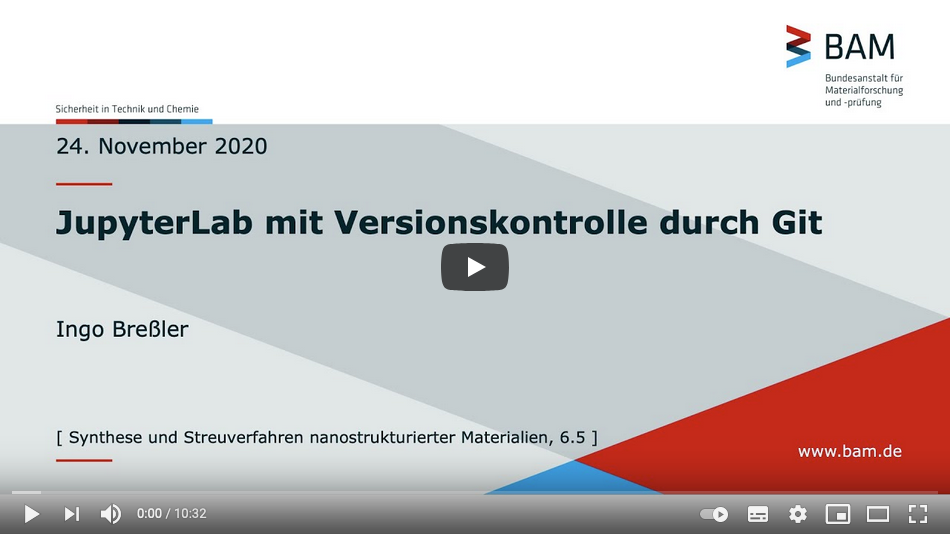

jupyter-integration
deutsch:
Versionierung mit GIT
JupyterLab mit Versionierung
english:
Versioning with GIT
JupyterLab with Version Control
jupyter-integration
»
Welcome to jupyter-integration’s documentation!
View page source
Welcome to jupyter-integration’s documentation!
¶
TL;DR: Videos!
¶


deutsch:
Versionierung mit GIT
Allgemeine Bezeichnungen, Glossar
Verwendung von TortoiseGit
Anleitungen und Einführungen
Klonen
- Erstmaliges Herunterladen eines existierenden Projekts
Add
- Dateien hinzufügen, deren Änderungen verfolgen
Commit
- Änderungen verbuchen
Push
- Den Server aktualisieren (erstmalig zu neuem Projekt)
Mit dem Server synchronisieren (jedes weitere Mal)
JupyterLab mit Versionierung
Voraussetzungen
Installieren von GIT
Installieren der Pythonumgebung
Anaconda
Git-Unterstützung für JupyterLab einrichten
Links zu Lernmaterial
Jupyter Lab/Notebook
Python
Markdown
english:
Versioning with GIT
General Terms, Glossary
Using TortoiseGit
Instructions and Introductions
Clone
- First download of an existing project
Add
- add files, track their changes
Commit
- Post changes
Push
- Update the server (first time to new project)
Synchronize with the server (every other time)
JupyterLab with Version Control
Requirements
Installing GIT
Installing the Python environment
Anaconda
Setting up Git support for JupyterLab
Links to learning material
Jupyter Lab/Notebook
Python
Markdown